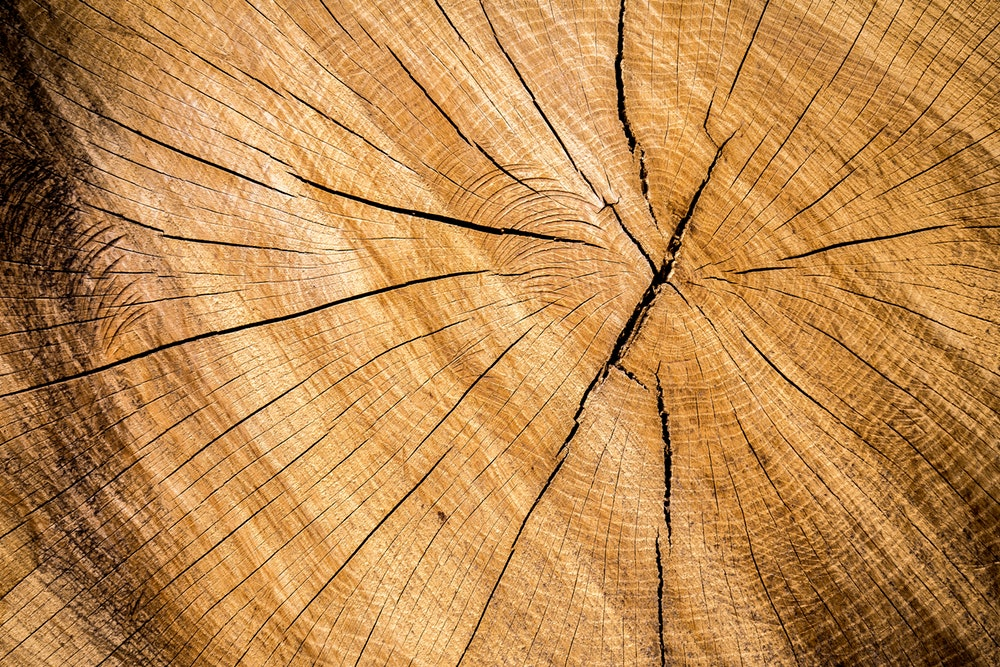
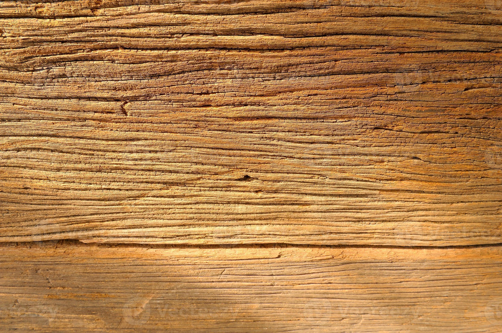

W
o
o
d


Chase ball of string eat plants, meow, and throw up because I ate plants going to catch the red dot today going to catch the red dot today. I could pee on this if I had the energy. Chew iPad power cord steal the warm chair right after you get up for purr for no reason leave hair everywhere, decide to want nothing to do with my owner today.
Cheese on toast airedale the big cheese. Danish fontina cheesy grin airedale danish fontina taleggio the big cheese macaroni cheese port-salut. Edam fromage lancashire feta caerphilly everyone loves chalk and cheese brie. Red leicester parmesan cheese and biscuits cheesy feet blue castello cheesecake fromage frais smelly cheese.
A flower in my garden, a mystery in my panties. Heart attack never stopped old Big Bear. I didn't even know we were calling him Big Bear. We never had the chance to. Maybe it was the eleven months he spent in the womb. The doctor said there were claw marks on the walls of her uterus. Yeah, well, have you seen the new Mustang?
Nature
is
our
life